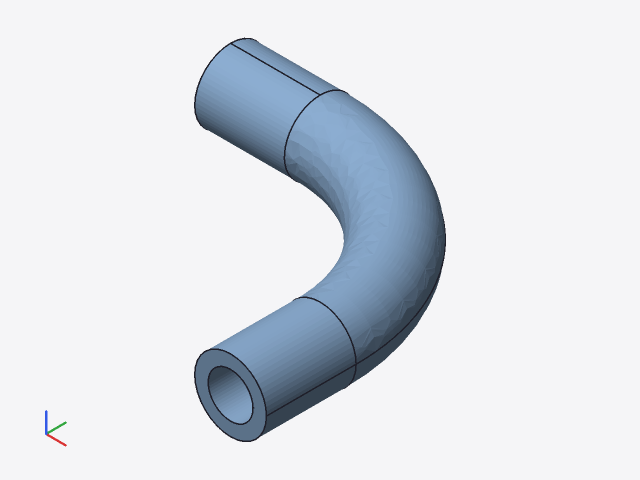
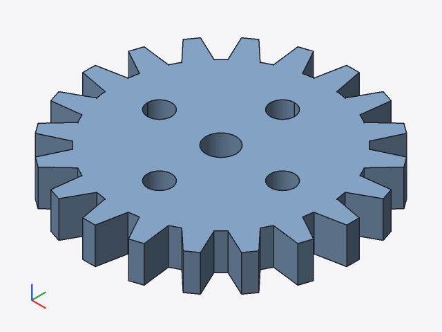
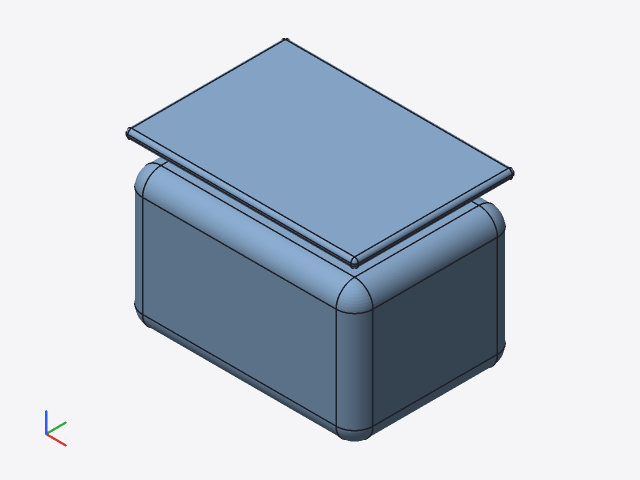
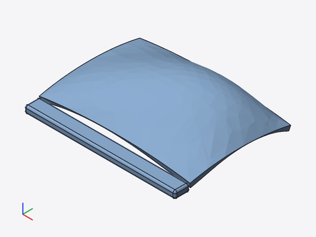
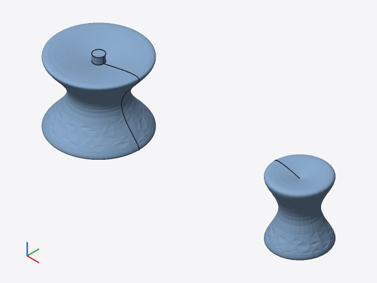
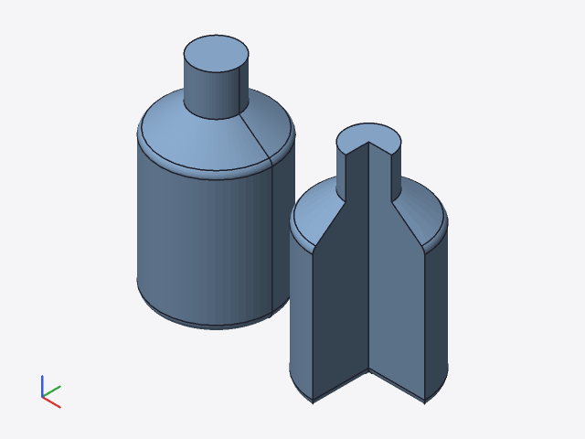

smlib/facade, ABI version 2 → 3): the new query sc_brep(h) returns topology (bodies → shells → faces → loops → oriented edges, vertices) and exact geometry: every face and edge as NURBS (degree, knots, weights, control points), analytic surfaces (plane, cylinder, cone, sphere, torus, surface of revolution, extrusion surface) additionally with their parameters. Non-B-spline geometry (blends, offsets) would be approximated to the model tolerance and flagged. Native side (FFI) and Wasm bridge (smlib-bridge.js, exports.txt).cad_kernel::brep with Kernel::brep (default: Unsupported). kernel-smlib checks the analytic parameters against the NURBS (9×9 samples), trims edge curves to their interval (knot insertion), detects exact lines and circles and determines same_sense from SMLib's normal at an interior face point.cad-step (kernel-independent): AP242 (default) or AP214, product structure (PRODUCT … SHAPE_DEFINITION_REPRESENTATION), units mm and degrees, MANIFOLD_SOLID_BREP/BREP_WITH_VOIDS per body (several shells → several solids), open surfaces as SHELL_BASED_SURFACE_MODEL, colors from color() as STYLED_ITEM per face.Engine::export_step, cad export -o x.step [--schema ap214] (JSON with volume, area, bounding box and statistics), session Export{format:"step"} (additive, protocol.ts regenerated), Wasm.tests/step/verify.py: reads every file with OpenCASCADE (not our code), BRepCheck_Analyzer, closed shells, number of solids/faces, volume and bounding box against the kernel (relative 0.0001), area (0.0005, see section 7). Rust tests of the writer (syntax, references, numbers read back with our own Part 21 reader) run without Python.kernel-solidcore, CLI cad diff-kernels, documentation docs/solidcore-umstieg.md.Why AP242: AP242 is the current edition that merges and replaces AP203 and AP214; the B-rep entities (Part 42) are the same in both, the choice only changes the header and the application context. AP214 remains available via --schema ap214 for older readers that do not know the AP242 schema name.
| Date | 2026-10-23 05:04 |
|---|---|
| Commit | ff21522 (worktree-agent-a8e28dbf90111aa26) |
| Operating system | Linux 6.18.44-fc-v153, 4 cores |
| Rust | rustc 1.97.0 (2d8144b78 2026-07-07) |
| C++ | g++ (Ubuntu 13.3.0-6ubuntu2~24.04.1) 13.3.0 |
| SMLib | tangency-labs/smlib capi-tess @ 7eba8aa, facade version 3 (sc_brep) |
| solidcore | tangency-labs/solidcore main @ 3a6a50b (git dependency, feature `solidcore`) |
| STEP reader | OpenCASCADE via cadquery-ocp 8.0.1.1.0 (Python 3.13.16, venv /opt/tools/venv-step) |
| Node | v22.22.0 |
cargo test --workspace | ok | 243 passed, 0 failed |
|---|---|---|
cargo clippy --workspace --all-targets | ok | 1 warning in crates/cad-eval/src/edit.rs |
node crates/kernel-smlib/js/test-node.mjs | ok | 11 tests, all node tests passed |
tests/openscad-compat/compare.py | ok | 33/33 files match |
tests/step/verify.py | ok | 46/46 passed |
cad diff-kernels (all examples) | ok | Exit 1 (1 = not all nodes equal) |
V: volume in mm³ (SMLib mass_props or OCCT, adaptive integration 1e-9). dV, dA: relative deviation of volume and area; dBox: largest deviation of a bounding box coordinate relative to the diagonal. "valid": BRepCheck valid, all shells closed, number of solids and faces as written. Face types: as written (OCCT reads the same types).
| Model | Solids | Faces | V kernel | V STEP (OCCT) | dV | dA | dBox | valid | Face types | Curve types |
|---|---|---|---|---|---|---|---|---|---|---|
| 01_cube_variants | 5 | 30 | 3208.000 | 3208.000 | 1.4e-16 | 0.0e+00 | 0.0e+00 | yes | plane 30 | line 60 |
| 02_sphere_variants | 4 | 4 | 1017.876 | 1017.876 | 7.0e-12 | 5.4e-05 | 1.9e-17 | yes | sphere 4 | circle 4 |
| 03_cylinder_variants | 5 | 15 | 2104.867 | 2104.867 | 4.7e-09 | 1.1e-05 | 7.1e-17 | yes | cylinder 5, plane 10 | circle 10, line 5 |
| 04_cone_variants | 4 | 11 | 1342.507 | 1342.507 | 1.5e-08 | 6.5e-06 | 3.6e-17 | yes | cone 4, plane 7 | circle 7, line 4 |
| 05_nested_booleans | 2 | 25 | 8312.337 | 8312.281 | 6.8e-06 | 3.2e-05 | 1.4e-09 | yes | cylinder 7, plane 17, sphere 1 | circle 19, line 31, nurbs 17 |
| 06_hole_grid | 1 | 30 | 6295.221 | 6295.221 | 5.8e-09 | 2.5e-05 | 0.0e+00 | yes | cylinder 24, plane 6 | circle 48, line 36 |
| 07_crown_ring | 1 | 67 | 2160.960 | 2160.960 | 3.0e-09 | 4.1e-05 | 1.4e-16 | yes | cylinder 17, plane 50 | circle 34, line 161 |
| 08_module_children | 2 | 28 | 6172.832 | 6172.832 | 1.2e-09 | 2.6e-06 | 1.1e-17 | yes | cylinder 8, plane 20 | circle 16, line 32 |
| 09_rotate_mirror | 7 | 39 | 1460.097 | 1460.097 | 1.6e-08 | 1.3e-07 | 0.0e+00 | yes | cylinder 1, plane 38 | circle 2, line 73 |
| 10_scale_multmatrix | 4 | 24 | 3400.000 | 3400.000 | 2.7e-16 | 2.0e-16 | 1.0e-16 | yes | bspline 4, plane 20 | line 48 |
| 11_linear_extrude_basic | 3 | 17 | 1513.000 | 1513.000 | 1.5e-16 | 0.0e+00 | 0.0e+00 | yes | plane 17 | line 33 |
| 12_linear_extrude_twist | 3 | 18 | 2660.002 | 2660.002 | 4.7e-08 | 6.2e-07 | 1.8e-09 | yes | bspline 12, plane 6 | bspline 8, line 28 |
| 13_rotate_extrude_ring | 2 | 5 | 1307.931 | 1307.931 | 4.4e-08 | 7.0e-05 | 1.8e-09 | yes | plane 2, revolution 2, torus 1 | circle 6, line 2 |
| 14_pipe_bend | 1 | 8 | 1574.897 | 1574.897 | 3.2e-08 | 7.3e-05 | 2.1e-09 | yes | cylinder 4, plane 2, revolution 2 | circle 12, line 4 |
| 15_vase | 1 | 11 | 6364.867 | 6364.865 | 2.3e-07 | 2.0e-05 | 1.7e-09 | yes | plane 3, revolution 8 | circle 10, line 8 |
| 16_polygon_holes | 2 | 23 | 2318.000 | 2318.000 | 5.9e-16 | 1.6e-16 | 0.0e+00 | yes | plane 23 | line 57 |
| 17_polyhedron | 2 | 10 | 626.667 | 626.667 | 1.8e-16 | 0.0e+00 | 4.8e-17 | yes | plane 10 | line 17 |
| 18_functions_let | 1 | 16 | 7040.000 | 7040.000 | 2.6e-16 | 3.0e-16 | 0.0e+00 | yes | plane 16 | line 42 |
| 19_hex_nut | 2 | 16 | 264.623 | 264.623 | 4.6e-09 | 1.6e-05 | 3.3e-17 | yes | cylinder 2, plane 14 | circle 4, line 32 |
| 20_box_with_lid | 2 | 70 | 20575.184 | 20575.184 | 7.5e-10 | 6.9e-07 | 0.0e+00 | yes | cylinder 19, plane 51 | circle 54, line 119 |
| 21_angle_bracket | 1 | 23 | 10407.841 | 10407.841 | 6.4e-10 | 4.8e-06 | 0.0e+00 | yes | cylinder 8, plane 15 | circle 16, line 47 |
| 22_gear | 1 | 87 | 6943.665 | 6943.665 | 2.3e-09 | 7.1e-06 | 1.4e-17 | yes | cylinder 5, plane 82 | circle 10, line 245 |
| 23_shelf_holder | 1 | 16 | 10423.680 | 10423.680 | 2.9e-09 | 5.3e-07 | 1.5e-09 | yes | cone 1, cylinder 4, plane 11 | circle 9, line 27, nurbs 2 |
| 24_modifiers | 2 | 13 | 3622.345 | 3622.345 | 1.4e-09 | 6.9e-06 | 0.0e+00 | yes | cylinder 1, plane 12 | circle 2, line 25 |
| 25_root_modifier | 1 | 8 | 346.608 | 346.608 | 7.1e-09 | 1.0e-05 | 5.6e-17 | yes | cone 1, plane 7 | circle 2, line 13 |
| 26_if_else_variants | 4 | 18 | 1662.060 | 1662.060 | 2.4e-09 | 1.4e-05 | 1.6e-17 | yes | cylinder 3, plane 14, sphere 1 | circle 7, line 27 |
| 27_spacers_2d | 5 | 24 | 2962.093 | 2962.093 | 2.0e-09 | 1.7e-05 | 1.7e-16 | yes | cylinder 9, plane 15 | circle 18, line 24 |
| 28_cable_clip | 2 | 15 | 561.074 | 561.074 | 9.0e-09 | 5.7e-05 | 1.8e-16 | yes | cylinder 5, plane 10 | circle 10, line 23 |
| 29_assert_strings | 1 | 8 | 1907.434 | 1907.434 | 5.6e-11 | 2.8e-06 | 0.0e+00 | yes | cylinder 2, plane 6 | circle 4, line 14 |
| 30_each_ranges | 1 | 32 | 832.000 | 832.000 | 4.1e-16 | 1.8e-16 | 0.0e+00 | yes | plane 32 | line 90 |
| 31_phone_stand | 1 | 18 | 40840.229 | 40840.229 | 8.9e-16 | 0.0e+00 | 1.2e-16 | yes | plane 18 | line 60 |
| 32_low_fn_shapes | 5 | 41 | 1199.037 | 1199.037 | 1.9e-16 | 9.5e-16 | 2.9e-17 | yes | plane 41 | line 92 |
| 33_global_fn | 2 | 6 | 1629.439 | 1629.439 | 7.1e-09 | 6.2e-05 | 9.3e-17 | yes | cylinder 2, plane 3, sphere 1 | circle 5, line 2 |
| dose_shell | 2 | 52 | 54459.131 | 54459.131 | 4.0e-10 | 1.4e-06 | 2.1e-16 | yes | cylinder 24, plane 12, sphere 16 | circle 48, line 48 |
| fase_chamfer | 4 | 43 | 13997.770 | 13997.771 | 1.4e-08 | 1.2e-06 | 1.3e-09 | yes | cylinder 1, plane 40, revolution 2 | circle 6, line 93 |
| fillet_zonen | 2 | 27 | 17123.696 | 17123.696 | 7.6e-09 | 1.8e-06 | 1.7e-09 | yes | cylinder 11, plane 12, revolution 2, sphere 2 | bspline 4, circle 18, line 35 |
| flasche | 2 | 19 | 164188.200 | 164188.120 | 4.8e-07 | 2.6e-05 | 9.4e-10 | yes | cone 1, cylinder 4, plane 6, revolution 8 | bspline 2, circle 19, line 16 |
| freiformdeckel | 2 | 32 | 6280.193 | 6280.196 | 4.9e-07 | 1.9e-04 | 1.3e-09 | yes | bspline 6, cylinder 12, plane 6, sphere 8 | bspline 8, circle 24, line 28 |
| gehaeuse | 2 | 20 | 8860.000 | 8860.000 | 2.1e-16 | 2.6e-16 | 0.0e+00 | yes | plane 20 | line 47 |
| griffschale | 1 | 49 | 11646.797 | 11646.797 | 3.4e-09 | 6.2e-06 | 0.0e+00 | yes | cylinder 4, plane 43, revolution 2 | circle 12, line 112 |
| kabelfuehrung | 2 | 36 | 7748.147 | 7748.147 | 7.7e-10 | 8.3e-05 | 7.2e-10 | yes | bspline 8, plane 28 | bspline 13, line 77 |
| knauf_mirror | 2 | 10 | 15681.708 | 15681.686 | 1.4e-06 | 2.2e-05 | 8.8e-10 | yes | bspline 2, cylinder 3, plane 3, revolution 2 | bspline 8, circle 4, line 3 |
| lochplatte | 2 | 23 | 2376.681 | 2376.681 | 4.9e-08 | 1.1e-05 | 1.7e-09 | yes | cylinder 5, plane 10, revolution 8 | circle 26, line 23 |
| loft_sweep | 3 | 17 | 6529.142 | 6529.145 | 5.5e-07 | 7.1e-06 | 9.9e-10 | yes | nurbs 5, plane 12 | bspline 5, circle 10, line 18 |
| lueftungsgitter | 1 | 98 | 9236.448 | 9236.448 | 7.4e-14 | 9.3e-14 | 2.1e-18 | yes | plane 98 | line 232 |
| winkel_anker | 3 | 34 | 8337.812 | 8337.812 | 1.5e-09 | 5.7e-06 | 1.7e-17 | yes | cylinder 6, plane 28 | circle 12, line 54 |
Largest deviations: volume 6.8e-06, area 1.9e-04, bounding box 2.1e-09. The volume deviations above 1e-7 concern B-spline surfaces and surfaces of revolution, where both sides integrate numerically.
| Face type (STEP entity) | Count | Curve type | Count |
|---|---|---|---|
| plane PLANE | 926 | line LINE | 2267 |
| cylinder CYLINDRICAL_SURFACE | 196 | circle CIRCLE | 488 |
| revolution SURFACE_OF_REVOLUTION | 36 | bspline B_SPLINE_CURVE_WITH_KNOTS | 48 |
| sphere SPHERICAL_SURFACE | 33 | nurbs … + RATIONAL_B_SPLINE_CURVE | 19 |
| bspline B_SPLINE_SURFACE_WITH_KNOTS | 32 | ||
| cone CONICAL_SURFACE | 7 | ||
| nurbs … + RATIONAL_B_SPLINE_SURFACE | 5 | ||
| torus TOROIDAL_SURFACE | 1 |
OpenCASCADE reads the STEP file, meshes it (chord error 0.2 % of the diagonal) and writes STL; the edge lines are the B-rep edges of the shape read in. Rendered with the CLI's software rasterizer (cad-render, example render_stl). The images therefore show the geometry as seen by a different kernel.






cad diff-kernels (SMLib ↔ solidcore)solidcore @ 3a6a50b, all 46 examples, 855 evaluated nodes: 101 equal, 267 unsupported, 487 blocked (input unsupported), 0 different, 0 failed. Only 2D nodes are equal (profiles are computed in Rust without the kernel). Every primitive aborts in solidcore with Unported: SmSurface::DropCurve (intersect.surface_drop_lib_p3); booleans, queries and mass properties can therefore not be checked yet. The comparison runs over all files without crashing.
| Operation (node) | Nodes | equal | unsupported | blocked | different |
|---|---|---|---|---|---|
box | 94 | 0 | 93 | 1 | 0 |
sphere | 8 | 0 | 8 | 0 | 0 |
cylinder | 110 | 0 | 110 | 0 | 0 |
torus | 2 | 0 | 2 | 0 | 0 |
polyhedron | 8 | 0 | 8 | 0 | 0 |
linear_extrude | 32 | 0 | 32 | 0 | 0 |
rotate_extrude | 8 | 0 | 8 | 0 | 0 |
loft | 1 | 0 | 1 | 0 | 0 |
sweep | 4 | 0 | 4 | 0 | 0 |
surface | 1 | 0 | 1 | 0 | 0 |
difference | 42 | 8 | 0 | 34 | 0 |
union | 9 | 1 | 0 | 8 | 0 |
intersection | 2 | 0 | 0 | 2 | 0 |
translate | 255 | 21 | 0 | 234 | 0 |
rotate | 46 | 0 | 0 | 46 | 0 |
fillet | 5 | 0 | 0 | 5 | 0 |
chamfer | 1 | 0 | 0 | 1 | 0 |
shell | 2 | 0 | 0 | 2 | 0 |
zone | 6 | 0 | 0 | 6 | 0 |
circle | 23 | 23 | 0 | 0 | 0 |
group | 99 | 2 | 0 | 97 | 0 |
polygon | 13 | 13 | 0 | 0 | 0 |
rect | 22 | 22 | 0 | 0 | 0 |
Further labels (module calls, groups, 2D primitives) in the JSON target/step/diff-kernels.json. Acceptance and missing parts: docs/solidcore-umstieg.md.
SmApiBrepComputeArea clamps the accuracy to [1e-4, 1e-1]). For freiformdeckel the kernel area deviates by 1.9e-4; OCCT adaptive (6658.641 mm²) and a fine OCCT mesh (6658.656 mm²) agree with each other, so the error lies in the kernel reference value. The area check therefore uses 5e-4, volume and bounding box 1e-4.BREP_WITH_VOIDS) are checked in the Rust test and on the kernel (sphere minus sphere); none occur in the examples.color() as STYLED_ITEM; OCCT reads them only via XCAF, verify.py does not check them.1970-01-01T00:00:00), the CLI the current UTC time.kernel-solidcore only covers the API entry points available today.